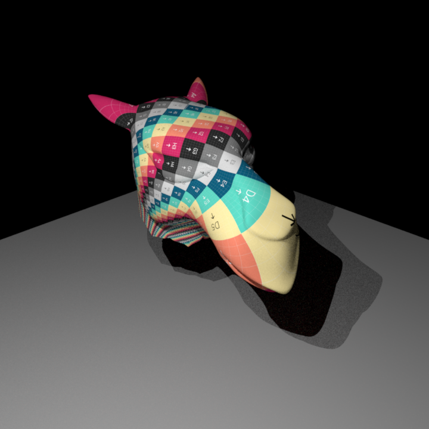

**Images as Textures**
Student Name: Madeleine Sandri
Legi Number: 18-823-948
# Introduction
In this part I will implement Images as textures, a function which takes an `.exr` image file and maps it to the assignes mesh's UV coordinates.
The user will be able to decide if they would like the image texture to be clamped or repeated on the mesh. Moreover, they will have the possibility to scale the texture.
# Implementation
The implementation for this feature can be found in `imagetexture.cpp`. This class inherites from `Texture`. It holds the following attributes :
- `m_filename` containing the name of the image file (.exr)
- `m_bitmap` a pointer to a bitmap containing the image data
- `m_scale` a 2D Vector containing the scale of the image
- `m_repeat` a boolean containing the wrap option (clamped or repeat)
The implemented methods are :
- A constructor : retrieves the attributes from the propList and maps the bitmap
- A destructor that deals with clearing the pointer to the bitmap during destruction
- `toString()` method returning a human readable string describing the instance
- `eval` method defining the UV to RGB mapping explained below
Please note that my implementation of this class is only compatible for `Color3f` return types.
**eval Method**
This method returns the bilinear interpolated RGB value for a specific UV pair. The implementation goes as follows :
- **if clamp**
- Cast the UV coordinates into the image space (multiply by widht height and scale)
- Clamp the UV coordinates to `[0, width-1]x[0, height-1]`
- **if repeat**
- Take the remainder of the scaled UV coordinates with their natural number division with 1 (i.e. values after the comma)
- If result is negative, add 1 to get the UV coordinates inside the $[0,1]^2$ interval
- Cast into the image space (multiply by the size of image)
- Calculate the floor and ceiling int calues of U and V as int
- Retrive the corresponding 4 values from the bitmap that surround our mapped point for interpolation
- Calculate the distance factors for interpolation and perform interpolation.
- Return the calulated value
# Validation
The way to create an image texture from an `.xml` scene is to add a texture as a bsdf child like so :
With the fields `scale` a 2D vector that defines the scaling of the image (default is (1,1)), and a boolean value "repeat" that defines if the user would like the image texture to be clamped or repeated throughout the mesh (default is "true").
Please note that the image files **must be .exr**.
For validation, I use the following debug texture and compare my scenes to Mitsuba.
I had to apply slight transformations (rotation) on the Mitsuba textures for them to match my scenes, due to differences in convention for the UV Mapping (V coordinate flipped).
These scenes can be found in `scenes/imagetextures/`.
**Sphere Texture**
**Texture on Mesh**
**Scaled Texture**

I did not encounter any particular difficulties during the implementation of this feature.